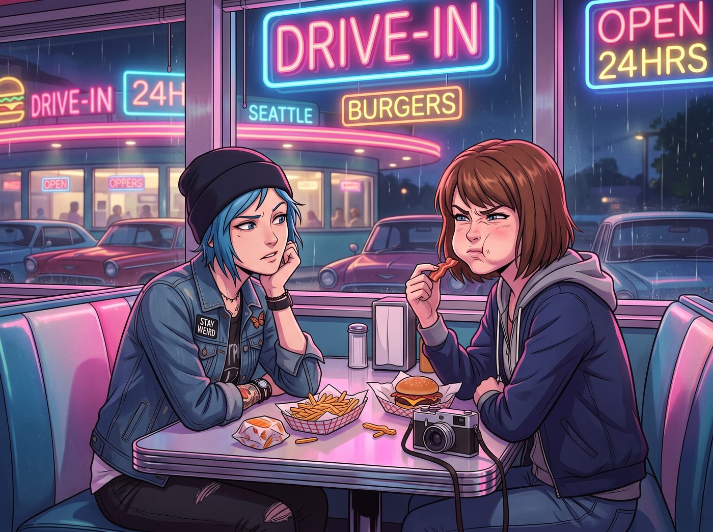

美式牙籤困境

在薯條和夾著厚實培根的芝士漢堡下肚後，一個極度破壞約會浪漫氣氛的美式物理難題出現了。
一小塊極其頑固的烤培根碎，死死地卡在了 Max 的右側臼齒牙縫裡。
在美國的休閒餐廳或汽車餐廳裡，餐桌上通常是絕對找不到牙籤盅的——在美國文化中，當眾在餐桌上剔牙被視為極度不禮貌的行為，因此餐廳只會偶爾在結帳櫃檯放一些包著透明玻璃紙的薄荷味牙籤。
沒有了手機可以掩飾尷尬，也沒有牙籤可以實施物理爆破，Max 只能被迫開始了一場極度扭曲的口腔內部舌頭體操。
一、文青的舌頭體操
剛才還沉浸在浪漫濾鏡裡的 Max，此刻緊閉著嘴唇，右邊的腮幫子一鼓一鼓的。她正試圖用舌尖去瘋狂頂那個該死的培根碎，同時利用口腔內的負壓，發出極其微弱的嘖嘖吸吮聲。
因為用力過猛，她的五官開始不受控制地跟著用力，時而呲牙，時而咧嘴，眉毛一高一低，看起來就像是面部神經正在經歷某種短路。
坐在對面的 Chloe 原本正單手托著下巴欣賞自家攝影師，看著看著，忍不住挑起了眉毛。
「Maxine，妳現在的面部表情非常狂野。」Chloe 壞笑著用吸管攪拌著奶昔，「妳這是在對我發送某種前衛的求偶信號，還是妳終於因為吃了太多酸黃瓜而導致大腦神經抽筋了？」
「唔……卡度了……」Max 閉著嘴含糊不清地嘟囔，臉漲得通紅，手指指了指自己的右臉頰，「該死的培根。」
二、街頭霸王的小拇指解法
Chloe 毫不留情地爆笑出聲。身為一個在阿卡迪亞灣街頭混大的龐克太妹，Chloe 字典裡根本沒有餐桌禮儀這個詞。
「看好了，書呆子，教妳一招街頭生存法則。」Chloe 伸出自己帶著黑色指甲油的小拇指，極度囂張且毫不避諱地直接伸進了自己的嘴裡，在牙齒上刮了一下，然後瀟灑地在紙巾上擦了擦，「最原始的工具，零成本，無延遲。試試看？」
「嘔，Chloe，這太粗魯了！而且我的手剛抓過薯條！」Max 滿臉嫌棄地拒絕了這個小拇指解法，繼續用舌頭和那塊培根進行著絕望的殊死搏鬥。
三、終極武器：牙線棒
眼看著 Max 的舌頭快要抽筋了，她終於放棄了物理抗爭，嘆了口氣，拉開了自己那個總是亂七八糟的帆布包。
在美國，雖然大家不在餐桌上用牙籤，但美國人對牙線有著一種近乎狂熱的執念。
Max 的手越過底片盒、備用電池和幾張皺巴巴的收據，終於在包包的最底層，摸出了一個極具美國中產階級特色的終極武器——一根帶有薄荷味的塑膠牙線棒。
「哈，我就知道妳這個好學生包裡一定有這玩意兒。」Chloe 靠在沙發上，抱著雙臂看戲，「那麼，Caulfield 小姐，妳是打算現在就在餐桌上表演牙線切割術，還是要遵守妳那可笑的社交禮儀？」
Max 緊緊攥著那根牙線棒，看了一眼正在擦隔壁桌子的服務生，社交恐懼症瞬間發作。在美國人的觀念裡，用小拇指摳牙縫雖然粗魯但還算隨性，但如果正兒八經地拿出牙線在餐桌上剔牙，那簡直跟在餐廳裡剪指甲一樣讓人感到生理不適。
「我……我去一下洗手間！」Max 抓起牙線棒，像一隻被踩了尾巴的貓一樣，紅著臉從卡座上彈了起來，朝著走廊盡頭的廁所狂奔而去。
看著 Max 落荒而逃的背影，Chloe 在座位上笑得差點把奶昔打翻。
「我們昨晚才剛炸了兩台機器狗，結果妳現在卻不敢在一個端盤子的小哥面前用牙線？！」Chloe 對著 Max 的背影大喊，引得周圍幾個卡座的客人紛紛側目。
四、結帳台的老派救贖
三分鐘後，解決了牙縫危機的 Max 感覺重獲新生，輕鬆地走回了座位。
「搞定了？」Chloe 挑眉。
「搞定了。薄荷味的勝利。」Max 滿意地拿起可樂喝了一口。
當兩人吃飽喝足，走到門口的櫃檯結帳時，Chloe 隨手從收銀機旁的一個小玻璃杯裡，抽出了兩根包著透明玻璃紙的薄荷木牙籤——這是美式復古餐廳最後的倔強。
她用牙齒咬開玻璃紙，將一根牙籤叼在嘴裡，痞氣十足地靠在櫃檯上，然後將另一根扔給了 Max。
「喏，美式餐廳的飯後甜點。」Chloe 叼著牙籤，含糊不清地說，「留著吧，下次妳再吃培根的時候，就不用跑到廁所裡去了。」
Max 拿著那根包裝簡陋的牙籤，看著 Chloe 叼著牙籤、戴上墨鏡推開餐廳玻璃門的囂張背影，無奈地笑了笑。她把牙籤塞進口袋，快步跟了上去，重新回到了那輛屬於她們的、充滿了引擎轟鳴與廢土浪漫的重裝皮卡上。